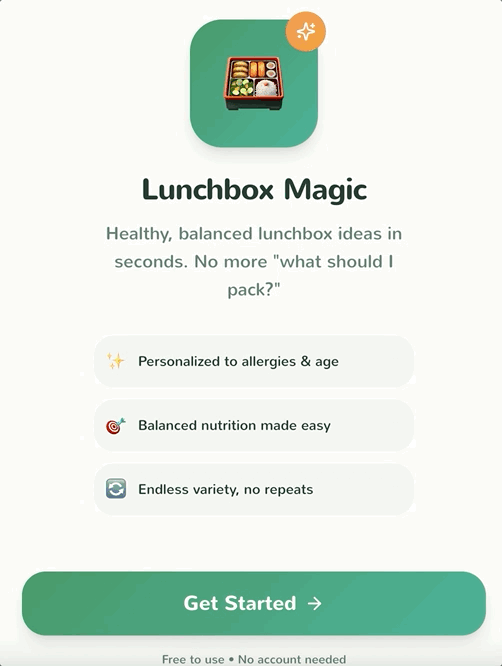
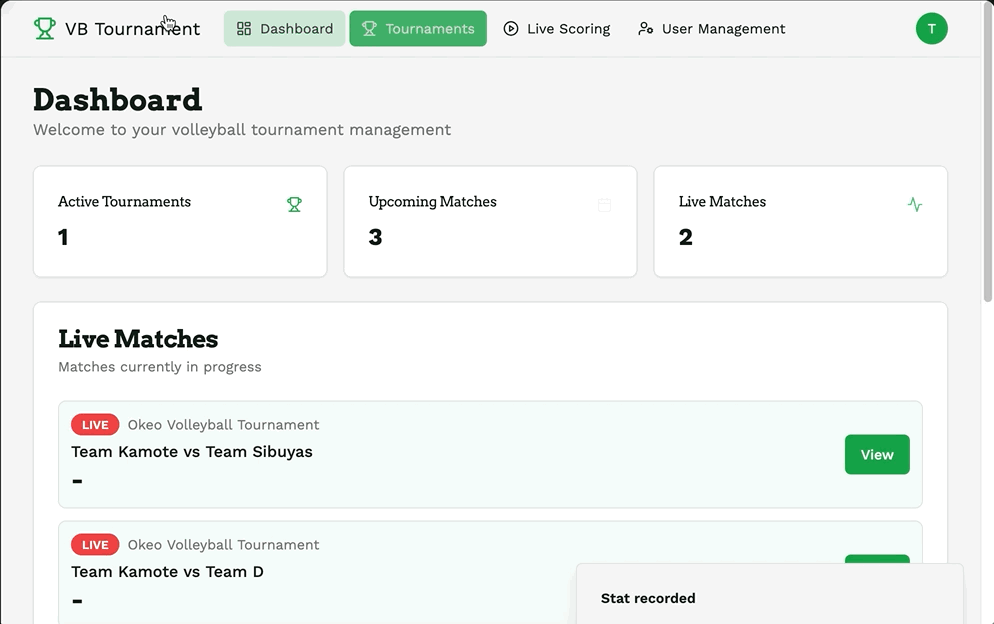

Hort Activity Finder

The Hort (aka after-school care) schedule at my child's school lives on a piece of paper on the Hort Rezeption wall. I thought I was the only one having a hard time finding Hort information online until I spoke to other parents during the PTA meeting.
I built Hort Activity Finder to help parents discover, filter, and register their kids for after-school activities. It also has an admin panel for managing event information. I showed this proof of concept to the school, which confirmed finding information is a known issue and was actually in the process of planning a website revamp.
The project is live on Lovable and open for others to fork and adapt for their own Hort or neighbourhood activities.
View on Lovable ↗Lunchbox Magic
Packing a school lunchbox sounds simple until you're standing in the kitchen at 7:00am trying to remember what your kid will actually eat this week (we all know it can change), what's already been ignored too many times, and whether anyone in the class has a nut allergy.
This Lunchbox Generator takes the size of the box, dietary preferences, and any allergies, and gives you a filled lunchbox's worth of ideas. Users can generate lunchbox ideas for the day, plan for the week, rate suggestions for the future, and most importantly, choose whether or not a compartment can hold mixed food items.

Volleyball Tournament Manager

A sports event management company I know runs volleyball tournaments using paper scoresheets. Results then have to be manually encoded into Google Sheets, formulas, standings, stats, before reports can go out to clients. That process takes at least a day, which means clients are waiting until Monday for results from a Saturday tournament.
The app handles tournament creation, team setup, and automatic match generation. During a match, scorekeepers tap a player and contextual action buttons appear, logging kills, attacks, or errors in one tap, while tracking and consolidating stats in real time.